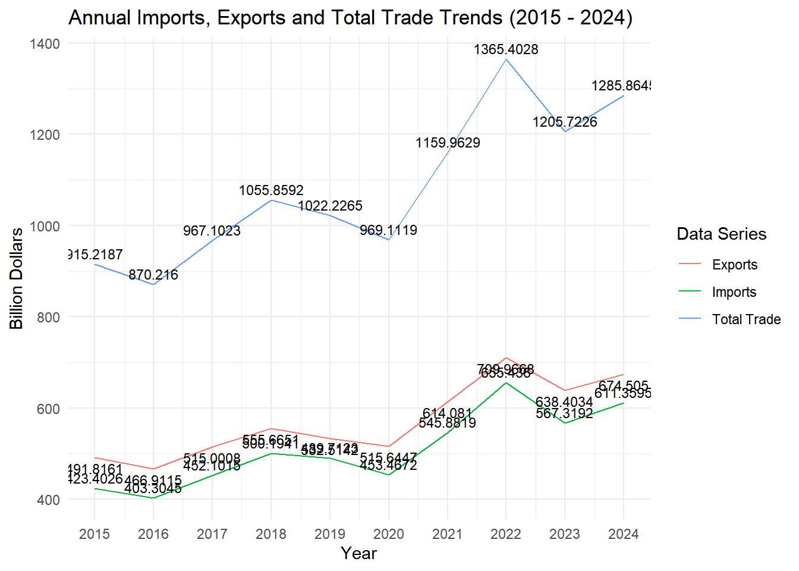

pacman::p_load(readxl, tidyverse, lubridate, ggthemes, forecast, plotly)Take-home exercise 2
Trend analysis of Singapore’s international trade since 2015
1 Introduction
1.1 Background
In today’s globalized era, international trade is a key economic topic. Singapore, with its strong financial sector and vibrant port economy, is highly sensitive to global economic changes. As an international financial center and major transshipment hub, its prosperity is closely tied to international trade dynamics.
Globalization brings both opportunities and challenges to Singapore’s trade. Fluctuations in global demand, trade policies, and technological changes impact its trade volume, composition, and direction. Understanding these trends is crucial for policymakers to develop strategies and for local businesses to make decisions.
1.2 Objective
This study focuses on exploring and visualizing Singapore’s international trade data using R. By analyzing historical and current data, we aim to identify patterns, discover trends, analyze the future direction of trade, and suggest improvements to the data visualizations that are now available on the Singapore government website.
2 Data prepare
2.1 Install and launch R packages
readxl
Reads Excel files (.xls & .xlsx) into R for analysis.
tidyverse
A collection of R packages for efficient data science workflows.
lubridate
Simplifies date and time data handling and calculations.
ggthemes
Provides predefined themes for ggplot2 to beautify graphics.
forecast
Offers models and methods for time - series analysis and forecasting.
plotly
Creates interactive visualizations for enhanced data presentation on web.
2.2 Data source
The data is from Merchandise Trade. Department of Statistics Singapore, DOS, which contains two datasets:
1. Merchandise Trade by Region/Market
2. Merchandise Trade by Commodity Section/Division
Dataset 1 contains 3 tables:
| Table Number | Name |
|---|---|
| Sheet 1 | Merchandise Trade By Region And Selected Market (Imports) |
| Sheet 2 | Merchandise Trade By Region And Selected Market (Domestic Exports) |
| Sheet 3 | Merchandise Trade By Region And Selected Market (Re-Exports) |
Dataset 2 contains 10 tables:
| Table Number | Name |
|---|---|
| Sheet 1 | Commodity(At Current Prices) |
| Sheet 2 | Commodity(At 2023 Prices) |
| Sheet 3 | Merchandise Imports By Commodity Division |
| Sheet 4 | Merchandise Imports Of Machinery And Equipment |
| Sheet 5 | Merchandise Exports By Commodity Division |
| Sheet 6 | Merchandise Exports Of Machinery And Equipment |
| Sheet 7 | Domestic Exports By Commodity Division |
| Sheet 8 | Domestic Exports Of Major Non-Oil Products |
| Sheet 9 | Re-Exports By Commodity Division |
| Sheet 10 | Re-Exports Of Machinery And Equipment |
2.2.1 Importing Data
Before importing the data, since there are some descriptive statements in the original table, copy the original table, keep one copy of these descriptions and delete the other to prevent its interference with the R recognition data, and import the table after deleting them.

Imports_data <- read_xlsx("data/outputFile.xlsx", sheet = "T1")Exports_data <- read_xlsx("data/outputFile.xlsx", sheet = "T2")Re_Exports_data <- read_xlsx("data/outputFile.xlsx", sheet = "T3")2.2.2 Checking for duplicates
Imports_data[duplicated(Imports_data), ]# A tibble: 0 × 266
# ℹ 266 variables: Data Series <chr>, 2025 Jan <dbl>, 2024 Dec <dbl>,
# 2024 Nov <dbl>, 2024 Oct <dbl>, 2024 Sep <dbl>, 2024 Aug <dbl>,
# 2024 Jul <dbl>, 2024 Jun <dbl>, 2024 May <dbl>, 2024 Apr <dbl>,
# 2024 Mar <dbl>, 2024 Feb <dbl>, 2024 Jan <dbl>, 2023 Dec <dbl>,
# 2023 Nov <dbl>, 2023 Oct <dbl>, 2023 Sep <dbl>, 2023 Aug <dbl>,
# 2023 Jul <dbl>, 2023 Jun <dbl>, 2023 May <dbl>, 2023 Apr <dbl>,
# 2023 Mar <dbl>, 2023 Feb <dbl>, 2023 Jan <dbl>, 2022 Dec <dbl>, …Exports_data[duplicated(Exports_data), ]# A tibble: 0 × 266
# ℹ 266 variables: Data Series <chr>, 2025 Jan <dbl>, 2024 Dec <dbl>,
# 2024 Nov <dbl>, 2024 Oct <dbl>, 2024 Sep <dbl>, 2024 Aug <dbl>,
# 2024 Jul <dbl>, 2024 Jun <dbl>, 2024 May <dbl>, 2024 Apr <dbl>,
# 2024 Mar <dbl>, 2024 Feb <dbl>, 2024 Jan <dbl>, 2023 Dec <dbl>,
# 2023 Nov <dbl>, 2023 Oct <dbl>, 2023 Sep <dbl>, 2023 Aug <dbl>,
# 2023 Jul <dbl>, 2023 Jun <dbl>, 2023 May <dbl>, 2023 Apr <dbl>,
# 2023 Mar <dbl>, 2023 Feb <dbl>, 2023 Jan <dbl>, 2022 Dec <dbl>, …Re_Exports_data[duplicated(Re_Exports_data), ]# A tibble: 0 × 266
# ℹ 266 variables: Data Series <chr>, 2025 Jan <dbl>, 2024 Dec <dbl>,
# 2024 Nov <dbl>, 2024 Oct <dbl>, 2024 Sep <dbl>, 2024 Aug <dbl>,
# 2024 Jul <dbl>, 2024 Jun <dbl>, 2024 May <dbl>, 2024 Apr <dbl>,
# 2024 Mar <dbl>, 2024 Feb <dbl>, 2024 Jan <dbl>, 2023 Dec <dbl>,
# 2023 Nov <dbl>, 2023 Oct <dbl>, 2023 Sep <dbl>, 2023 Aug <dbl>,
# 2023 Jul <dbl>, 2023 Jun <dbl>, 2023 May <dbl>, 2023 Apr <dbl>,
# 2023 Mar <dbl>, 2023 Feb <dbl>, 2023 Jan <dbl>, 2022 Dec <dbl>, …The result shows no duplicate data.
2.2.3 Check missing values
any(is.na(Imports_data))[1] FALSEany(is.na(Exports_data))[1] FALSEany(is.na(Re_Exports_data))[1] FALSEThe result shows no missing values.
3 Evaluation of data visualizations
3.2 Comments 2
| Advantages | Disadvantages |
|---|---|
|
|
|
|
# Data Processing Functions
process_data <- function(df) {
df %>%
pivot_longer(-`Data Series`, names_to = "Date", values_to = "Value") %>%
mutate(Year = as.numeric(str_extract(Date, "\\d{4}"))) %>%
group_by(`Data Series`, Year) %>%
summarise(Total = sum(Value), .groups = "drop")
}
imports_processed <- process_data(Imports_data)
exports_processed <- process_data(Exports_data)
re_exports_processed <- process_data(Re_Exports_data)
# Calculate the sum
combined_data <- imports_processed %>%
full_join(exports_processed, by = c("Data Series", "Year"), suffix = c("_imports", "_exports")) %>%
full_join(re_exports_processed, by = c("Data Series", "Year"), suffix = c("", "_re_exports")) %>%
rename(Total_re_exports = Total) %>%
mutate(
x_value = (Total_exports + Total_re_exports) / 1000,
y_value = Total_imports / 1000,
Total_Sum = x_value + y_value
) %>%
filter(Year >= 2015 & Year <= 2024) %>%
select(`Data Series`, Year, x_value, y_value, Total_Sum)
# Exclusion of non-national names
exclude_names <- c("Total All Markets", "America", "Asia", "Europe", "Oceania", "Africa")
# Selection of the 10 highest annual values of international
top_10_per_year <- combined_data %>%
filter(!`Data Series` %in% exclude_names) %>%
group_by(Year) %>%
slice_max(Total_Sum, n = 10) %>%
ungroup()
# Add Tags
top_10_per_year$label_text <- paste(top_10_per_year$`Data Series`, "\nTotal: ",
round(top_10_per_year$Total_Sum, 2), "B")
# Plotting
p <- ggplot(top_10_per_year, aes(x = x_value, y = y_value, size = Total_Sum,
label = label_text, frame = Year)) +
geom_point(alpha = 0.7, color = "blue") +
geom_text(size = 3, vjust = -0.5) +
labs(x = "Exports (Billion)", y = "Imports (Billion)",
title = "Top 10 Countries by Total Trade Value per Year") +
scale_size_continuous(range = c(3, 15)) +
theme_bw()
# Convert to interactive plotly graphs
ggplotly(p)| Explanation |
|---|
| An interactive timeline is added to the bubble chart to facilitate observations across years. Also calculated that the countries shown in the original chart are the top 10 countries in terms of total trade with Singapore, only EU is a region and not a country. |
3.3 Comments 3

| Advantages | Disadvantages |
|---|---|
|
|
|
|
In order to improve this visualization, we need to import new data, but the original data has duplicate row names like the following, which causes a lot of inconvenience after importing into R
So, the data to be used will be divided into Imports and Exports and new tables T11 and T12 will be created.
Importing Data
No_Imports_data <- read_xlsx("data/outputFile-Commodity_SectionDivision.xlsx", sheet = "T11")
No_Exports_data <- read_xlsx("data/outputFile-Commodity_SectionDivision.xlsx", sheet = "T12")Checking for duplicates
No_Imports_data[duplicated(No_Imports_data), ]# A tibble: 0 × 121
# ℹ 121 variables: Data Series <chr>, 2024 Dec <dbl>, 2024 Nov <dbl>,
# 2024 Oct <dbl>, 2024 Sep <dbl>, 2024 Aug <dbl>, 2024 Jul <dbl>,
# 2024 Jun <dbl>, 2024 May <dbl>, 2024 Apr <dbl>, 2024 Mar <dbl>,
# 2024 Feb <dbl>, 2024 Jan <dbl>, 2023 Dec <dbl>, 2023 Nov <dbl>,
# 2023 Oct <dbl>, 2023 Sep <dbl>, 2023 Aug <dbl>, 2023 Jul <dbl>,
# 2023 Jun <dbl>, 2023 May <dbl>, 2023 Apr <dbl>, 2023 Mar <dbl>,
# 2023 Feb <dbl>, 2023 Jan <dbl>, 2022 Dec <dbl>, 2022 Nov <dbl>, …No_Exports_data[duplicated(No_Exports_data), ]# A tibble: 0 × 121
# ℹ 121 variables: Data Series <chr>, 2024 Dec <dbl>, 2024 Nov <dbl>,
# 2024 Oct <dbl>, 2024 Sep <dbl>, 2024 Aug <dbl>, 2024 Jul <dbl>,
# 2024 Jun <dbl>, 2024 May <dbl>, 2024 Apr <dbl>, 2024 Mar <dbl>,
# 2024 Feb <dbl>, 2024 Jan <dbl>, 2023 Dec <dbl>, 2023 Nov <dbl>,
# 2023 Oct <dbl>, 2023 Sep <dbl>, 2023 Aug <dbl>, 2023 Jul <dbl>,
# 2023 Jun <dbl>, 2023 May <dbl>, 2023 Apr <dbl>, 2023 Mar <dbl>,
# 2023 Feb <dbl>, 2023 Jan <dbl>, 2022 Dec <dbl>, 2022 Nov <dbl>, …Check missing values
any(is.na(No_Imports_data))[1] FALSEany(is.na(No_Exports_data))[1] FALSEPlotting
# Replace spaces in column names with underscores
colnames(No_Imports_data)[1] <- "Data_Series"
colnames(No_Exports_data)[1] <- "Data_Series"
# Convert data from wide format to long format
imports_long <- No_Imports_data %>%
pivot_longer(cols = -Data_Series, names_to = "Date", values_to = "Imports")
exports_long <- No_Exports_data %>%
pivot_longer(cols = -Data_Series, names_to = "Date", values_to = "Exports")
# Merging Imports and Exports data
combined_data <- merge(imports_long, exports_long, by = c("Data_Series", "Date"))
# Extract Year
combined_data$Year <- as.numeric(substr(combined_data$Date, 1, 4))
# Million to billion
combined_data$Imports <- combined_data$Imports / 1000
combined_data$Exports <- combined_data$Exports / 1000
# Calculate total annual value
annual_data <- combined_data %>%
group_by(Data_Series, Year) %>%
summarise(Imports = sum(Imports), Exports = sum(Exports)) %>%
filter(Data_Series != "Non-Oil")
# Selection of the five commodities with the highest total value per year
top_annual_data <- annual_data %>%
group_by(Year) %>%
arrange(desc(Imports + Exports)) %>%
mutate(Rank = row_number()) %>%
mutate(Data_Series = ifelse(Rank <= 5, Data_Series, "Other")) %>%
group_by(Year, Data_Series) %>%
summarise(Imports = sum(Imports), Exports = sum(Exports))
# Sort
top_annual_data <- top_annual_data %>%
arrange(Year, desc(Imports + Exports))
# Plotting
p <- plot_ly(top_annual_data, x = ~Data_Series, y = ~Imports, type = "bar", name = "Imports", frame = ~Year) %>%
add_trace(y = ~Exports, name = "Exports") %>%
layout(
title = "Top 5 Commodities by Year (Units: Billion)",
xaxis = list(title = "Commodity", categoryorder = "total descending"),
yaxis = list(title = "Total Value (Billion)"),
barmode = "group",
showlegend = TRUE
) %>%
animation_opts(frame = 500, transition = 300, easing = "linear", redraw = TRUE) %>%
animation_slider(currentvalue = list(prefix = "Year: ", font = list(color = "black")))
p| Explanation |
|---|
| Interactive year selection bars have been added to the original charts to make it easier to observe annual changes in the shares of these commodities. |
4 Time-series analysis
4.1 Trends in Singapore’s import trade from China
# Filtering China's import data
china_data <- Imports_data %>%
filter(`Data Series` == "China")
# Extract time
time_cols <- names(china_data)[grepl("^201[5-9]|^202[0-4]", names(china_data))]
china_data_2015_2024 <- china_data %>%
select(all_of(time_cols))
# Transformed format
long_data <- china_data_2015_2024 %>%
pivot_longer(cols = everything(), names_to = "Date", values_to = "Value")
# Extract year and month
long_data <- long_data %>%
mutate(
Year = as.numeric(substr(Date, 1, 4)),
Month = factor(substr(Date, 6, 8), levels = c("Jan", "Feb", "Mar", "Apr", "May", "Jun", "Jul", "Aug", "Sep", "Oct", "Nov", "Dec"))
)
# Plotting
ggplot(long_data, aes(x = Month, y = as.factor(Year), fill = Value)) +
geom_tile() +
scale_fill_gradient(low = "skyblue", high = "darkblue") +
labs(
title = "Singapore's import trade from China from 2015 - 2024",
x = "Month",
y = "Year",
fill = "Value"
) +
theme_minimal() +
theme(axis.text.x = element_text(angle = 45, hjust = 1))| Insight |
|---|
| As we can see from the Heatmap above: |
|
|
|
4.2 Changing trade trends in Singapore’s exports
# Filter rows with Total All Markets
total_data <- Exports_data %>%
filter(`Data Series` == "Total All Markets")
# Extract time
time_cols <- names(total_data)[grepl("^201[5-9]|^202[0-4]", names(total_data))]
total_data_2015_2024 <- total_data %>%
select(all_of(time_cols))
# Convert data to long format
long_data <- total_data_2015_2024 %>%
pivot_longer(cols = everything(), names_to = "Date", values_to = "Value")
# Extract year and month
long_data <- long_data %>%
mutate(
Year = as.numeric(substr(Date, 1, 4)),
Month = factor(substr(Date, 6, 8), levels = c("Jan", "Feb", "Mar", "Apr", "May", "Jun", "Jul", "Aug", "Sep", "Oct", "Nov", "Dec"))
)
# Calculate the average for each month
avg_data <- long_data %>%
group_by(Month) %>%
summarise(avgvalue = mean(Value))
# Plotting
ggplot() +
geom_line(data = long_data,
aes(x = Year,
y = Value,
group = Month),
colour = "black") +
geom_hline(aes(yintercept = avgvalue),
data = avg_data,
linetype = 6,
colour = "red",
size = 0.5) +
facet_grid(~Month) +
labs(axis.text.x = element_blank(),
title = "Exports from Total All Markets, 2015 - 2024") +
xlab("") +
ylab("Export Value") +
theme_tufte(base_family = "Helvetica")| Insight |
|---|
| As we can see from the Cycle Plot above: |
|
|
4.3 Forecast of Singapore Exports to China
Before we start the forecast, let’s look at the distribution of Singapore’s exports to China from 2015 to 2024.
# Filter rows with China
china_row <- Exports_data[Exports_data$`Data Series` == "China", ]
# Extract columns from 2015 to 2024
col_names <- names(china_row)
date_cols <- col_names[grepl("^20(15|16|17|18|19|20|21|22|23|24)", col_names)]
# Extract data
china_data <- china_row[date_cols]
# Plotting
barplot(as.numeric(china_data),
names.arg = date_cols,
main = "China Exports Data by Month (2015 Jan - 2024 Dec)",
xlab = "Month",
ylab = "Export Values",
col = "skyblue",
border = "black",
las = 2)From the above bar chart, we can see that the data fluctuates a lot, but shows a certain seasonality, so the following selection of ETS model to predict the data for 2025.
# Filter rows with China
china_row <- Exports_data[Exports_data$`Data Series` == "China", ]
# Extract time
col_names <- names(china_row)[-1]
china_data <- unlist(china_row[col_names])
#Converting data to time series objects
time_series <- ts(china_data, start = c(2015, 1), frequency = 12)
# Fitting with the ETS model
ets_model <- ets(time_series)
# Extract data starting in 2020
time_series_2020_onward <- window(time_series, start = c(2020, 1))
# Forecast data for the next 12 months
future_forecast <- forecast(ets_model, h = 12)
# Setting the x-axis range of the plot
xlim_values <- c(2020, 2025 + (11 / 12))
# Plotting
plot(future_forecast,
main = "China Exports Forecast using ETS Model (2020 - 2025)",
xlab = "Year",
ylab = "Export Values",
col = "blue",
fcol = "lightblue",
xlim = xlim_values)| Insight |
|---|
| The above line graph uses the ETS model to make predictions, and it can be seen that the data for 2025, although not particularly outstanding, will be less volatile than in previous years, and the overall stability is improving. |
Reference
DOS. SingStat Website. Singapore International Trade
https://www.singstat.gov.sg/modules/infographics/singapore-international-trade
DOS. SingStat Website. Latest Data
3.1 Comments 1
The improved sketch is as follows
